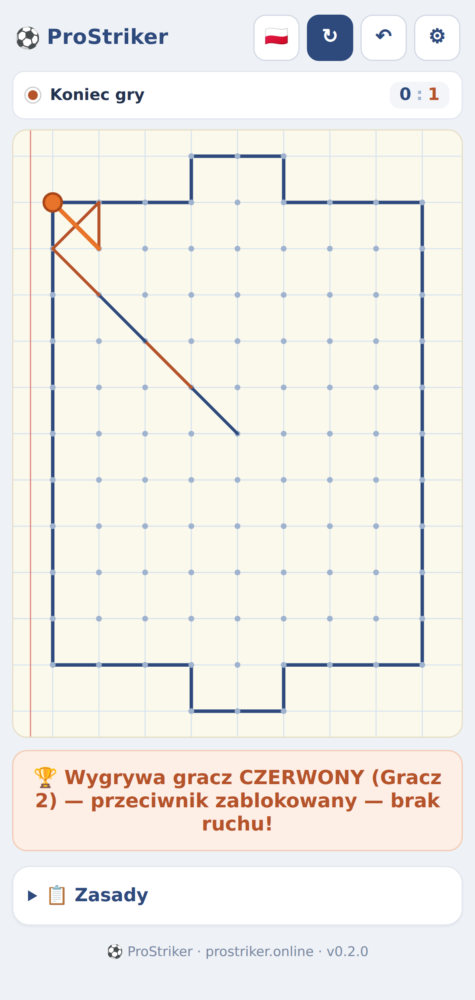
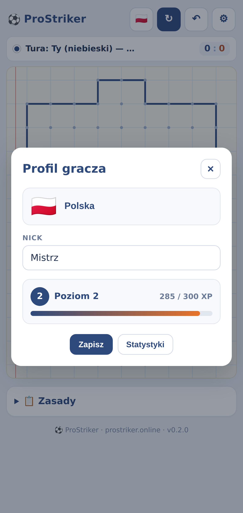
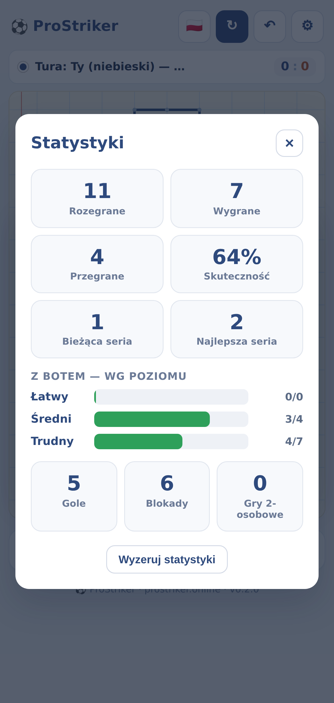
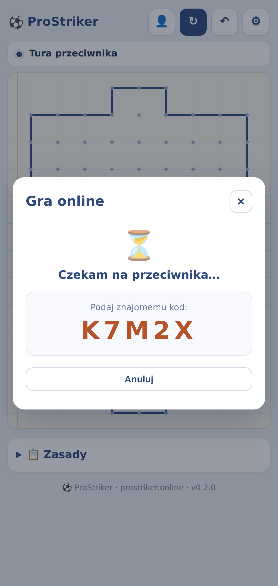

Klasyczna szkolna gra w nowej odsłonie. Zagraj z inteligentnym botem, ze znajomym na jednym ekranie albo online 1v1 z każdym na świecie.

Prosta zasada, głęboka rozgrywka. Od szybkiego meczu z botem po pojedynki online.
Trzy poziomy trudności plus tryb Auto, który dopasowuje się do Twoich umiejętności.
Utwórz pokój i podziel się kodem albo znajdź losowego przeciwnika z całego świata.
Flaga, nick, poziom i XP. Śledź wygrane, serie zwycięstw i skuteczność.
Graj z botem bez internetu. Zainstaluj jako aplikację (PWA) jednym kliknięciem.
Boisko jak z zeszytu w kratkę — tylko że gra się palcem, a przeciwnik może być po drugiej stronie świata.



Te same reguły, które znasz z lekcji w podstawówce.
Od piłki do sąsiedniej kropki — prosto lub na skos.
Linie się nie powtarzają, po bandzie nie jeździsz.
Koniec na zajętej kropce lub o bandę — ruszasz znów.
Kto się zablokuje (brak ruchu) — przegrywa.
Zero instalacji, zero logowania. Klikasz i grasz — w przeglądarce, na telefonie, gdziekolwiek.
▶ Zagraj teraz